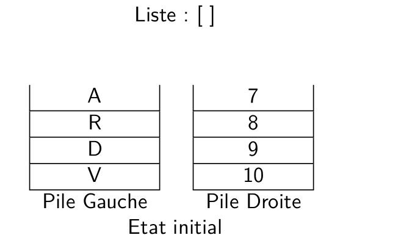
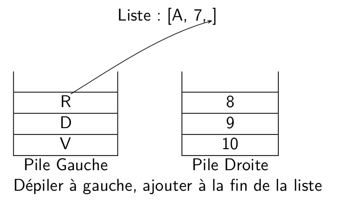
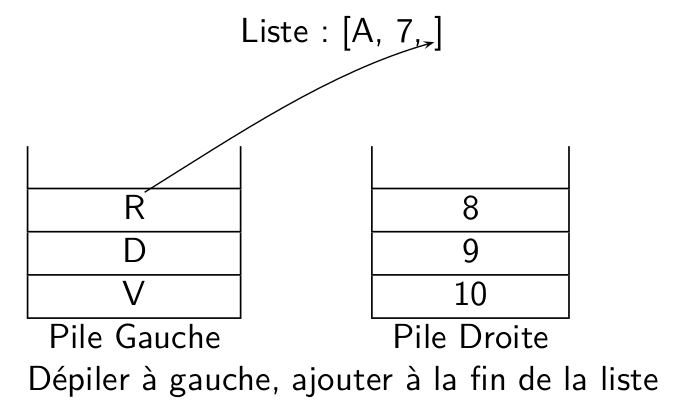

21-NSIJ2G11 : Corrigé⚓︎
Année : 2021
Centre : Etranger
Jour : 2
Enoncé :
Exercice 1⚓︎
structures de données : piles
-
La pile de gauche va contenir
|'7','8','9','10'>et celle de droite|'V','D','R','A'>(4 premiers éléments de la liste à gauche et 4 derniers à droite). La liste mélange va donc contenir['10','A','9','R','8','D','7','V'](on dépile un élément alternativement entre les deux piles). -
üêç Script Python 1 2 3 4 5 6 7
def liste_vers_pile(L): '''prend en paramètre une liste et renvoie une pile''' N = len(L) p_temp = Pile() for i in range(N): p_temp.empiler(L[i]) #(1) return p_temp- On utilise la méthode
empilerde l'interface d'une pile pour ajouter chaque élément de la liste
- On utilise la méthode
-
On obtient pour la pile de gauche :
3
2
1
Et pour celle de droite :
6
5
4Bug
L'énoncé précise que la méthode est
empiler, la fonctionpartagedonnée utiliseempile. -
a. On peut par exemple faire la liste de schémas ci-dessous, en précisant que la fusion se termine lorsque les piles sont vides (l'énoncé garantit que les deux piles ont le même nombre d'éléments)


 
b.
üêç Script Pythondef fusion(p1,p2): liste = [] while note p1.est_vide(): liste.append(p1.depiler()) liste.append(p2.depiler()) return liste -
üêç Script Python 1 2 3 4 5 6 7 8
def affichage(p): p_temp = p_copier() if p_temp.est_vide(): print('----') else: elt = p_temp.depiler() print('|',elt,'|') affichage(p_temp) #(1)- On relance récursivement l'affichage sur le reste de la pile.
Bug
Dans le sujet, le
printde l'avant dernière ligne contient une parenthèse fermante de trop.
Exercice 2⚓︎
programmation python, tuples et liste
-
üêç Script Python
def mur(laby,lig,col): return laby[lig][col]=="1"Note
La version ci-dessous est équivalente, mais on teste si un booléen vaut
Trueet dans ce cas on renvoieTrue, sinon on renvoieFalse. Renvoyer directement le bool√©en (c'est √† dire le r√©sultat du testlaby[lig][col]=="1"est plus concis).üêç Script Pythondef mur(laby,lig,col): if laby[lig][col]=="1": return True else: return False -
a. Deux cases du labyrinthe sont adjacentes lorsqu'elles sont situées sur la même ligne et la différence entre les colonnes est de 1 ou alors lorsqu'elles sont situées sur la même colonne et la différence entre les lignes est 1. On peut donc calculer
d = (l1-l2)**2 + (c1-c2)**2, si les cases sont adjacentes l'un des deux termes de cette somme vaut 0 et l'autre 1 (si la différence est \(-1\),dvaut 1 à cause de du carré). Le testd==1permet donc de savoir si deux cases sont adjacentes.b.
üêç Script Pythondef adjacentes(liste_cases): for i in range(len(liste_cases)-1): if not voisine(liste_cases[i],liste_cases[i+1]): return False return True -
On rentre dans la boucle lorsque
i < len(cases), l'indiceiest incrémenté dans la boucle et donc finira par être plus grand que la longueur du tableaucases.Note
On rappelle que la méthode rigoureuse pour montrer la terminaison d'un boucle est d'exhiber un variant de boucle c'est à dire une quantité \(v\) entière positive qui décroît à chaque passage dans la boucle. La propriété mathématique :
Il n'existe pas de suite d'entiers positif strictement décroissante
permet alors de conclure à la terminaison de la boucle (sinon les valeurs successives prises par \(v\) formeraient une suite d'entiers positif décroissante, ce qui est impossible). Pour plus de détails, on peut consulter le cours de première ou ce site
-
D'après l'énoncé, le labyrinthe est carré, on récupère sa taille
npuis on teste que les trois conditions suivantes sont réunies :- On démarre bien de l'entrée du labyrinthe (case
(0,0)) - On finit bien sur la sortie du labyritnhe (case
(n-1,n-1)) - Les cases de la liste sont adjacentes et non murées.
üêç Script Python
def echappe(cases,laby): n = len(laby) return cases[0]==0 and cases[-1]==(n-1,n-1) and teste(cases,laby):
- On démarre bien de l'entrée du labyrinthe (case
Exercice 3⚓︎
Conversion décimal/binaire, table de vérité, codages des caractères
-
On utilise l'algorithme des divisions successives :
\(89 = \textcolor{blue}{44} \times 2 + \textcolor{red}{1}\)
\(44 = \textcolor{blue}{22} \times 2 + \textcolor{red}{0}\)
\(22 = \textcolor{blue}{11} \times 2 + \textcolor{red}{0}\)
\(11 = \textcolor{blue}{5} \times 2 + \textcolor{red}{1}\)
\(5 = \textcolor{blue}{2} \times 2 + \textcolor{red}{1}\)
\(2 = \textcolor{blue}{1} \times 2 + \textcolor{red}{0}\)
\(1 = \textcolor{blue}{0} \times 2 + \textcolor{red}{1}\)
La suite des restes prise dans l'ordre inverse donne l'écriture du nombre en base 2 : \(89_{10}=1011001_2\).Note
L'énoncé précise qu'il faut détailler la méthode utilisée, signe qu'un résultat brut sans justification ne rapporte sans doute pas tous les points.
-
üêç Script Python
def xor_crypt(message,cle): liste = [] for i in range(len(message)): code_caractere = ord(message[i]) code_cle = ord(cle[i]) code_caractere_crypte = xor(code_caractere,code_cle) liste.append(code_caractere_crypte) return liste -
üêç Script Python
def genere_cle(mot,n): nb_fois = n//len(mot) reste = n%len(mot) cle = nb_fois * mot for i in range(reste): cle += mot[i] return cleNote
L'idée utilisée ici de chercher combien de fois le mot peut se répéter sans atteindre la longueur
npuis de compléter avec les premières lettres du mot pour atteindre la longueurn. Par exemple pourgenere_cle("YAK",8)on peut répéterYAK2 fois et il reste 2 lettres à ajouter (\(8 = 2\times 3 + 2\)) -
La table de vérité est :
\(E_1\) \(E_2\) \(E_1 \bigoplus E_2\) \((E_1 \bigoplus E_2) \bigoplus E_2\) 0 0 0 0 0 1 1 0 1 0 1 1 1 1 0 1 On constate qu'on a toujours : \((E_1 \bigoplus E_2) \bigoplus E_2 = E_1\).
Ici les bits du message initial sont les \(E_1\) cryptés à l'aide d'un xor avec les bits de la clé (les \(E_2\)). C'est à dire que \(E_1 \bigoplus E_2\) sont les bits du message cryptés. On peut revenir au message initial en cryptant de nouveau avec la même clé puisqu'on vient de remarquer que \((E_1 \bigoplus E_2) \bigoplus E_2 = E_1\).
Exercice 4⚓︎
Base de données
-
a. Une clé primaire doit identifier un enregistrement de façon unique, plusieurs personnes peuvent porter le même nom de famille donc l'attribut
nomde la tablelicenciesne peut pas servir de clé primaire. b. L'attributid_licenciepeut servir de clé primaire, lorsque c'est un entier unique pour chaque enregistrement. -
a. Cette requête renvoie les prénoms et noms des licenciés qui jouent dans l'équipe des moins de 12 ans.
b. Dans le cas d'une
*la requête renvoie tous les attributs de la table licenciés doncid_licencie, prenom, nom, annee_naissance, equipec.
üóÇÔ∏è Requ√™te SQLSELECT date FROM matchs WHERE lieu='domicile' AND equipe='V√©t√©rans' -
üóÇÔ∏è Requ√™te SQL
INSERT INTO licencies VALUES (287,'Jean','Lavenu',2001,'Hommes 2')Note
- On peut se passer du nom des attributs car on insère tous les champs
- Attention à bien mettre des guillemets pour les valeurs lorsqu'il s'agit de chaines de caractères.
4.
UPDATE licencies SET equipe='Vétérans' WHERE prenom='Joseph' AND nom='Cuviller'
5.
SELECT nom FROM licencies
JOIN matchs ON licencies.equipe = matchs.equipe
WHERE matchs.adversaire = 'LSC' and matchs.date = '2021-06-19'
Exercice 5⚓︎
programmation Python : commande d'un bandeau de diodes à l'aide d'un raspberry
-
a. L'instruction
Obj_bandeau.get_pixel_rgb(1)renvoie un tuple de trois entiers correspondant à la couleur rgb de la led n°1, c'est à dire (0,0,255) car la couleur actuelle de la led 1 est le bleu.b. Cette instruction renvoie un entier correspondant à la couleur rgb
(0,0,255), d'après le tableau donné en annexe cet entier est16711680.c. La première instruction récupère la couleur de la led 0, donc
(255,0,0)car cette led est rouge. La seconde instruction affiche le numéro de couleur correspond qui (tableau de l'annexe) est255 -
a. On obtient un bandeau avec les 5 premières led bleues (
num_color=16711680), les 5 suivantes blanches (num_color=1677215) et les 5 suivantes rouges (num_color=255)
b. Les led dont les numéros sont multiples de 3 (0,3,6,9 et 12) sont vertes (
num_color=32768), les autres sont jaunes (num_color=65535)
-
a. La méthode
__init__prend en paramètre un nombre entier de led et renvoie un objet de la classeBandeauayant ce nombre de led.b. Fixe les couleurs des led 6 et 7 à bleu.